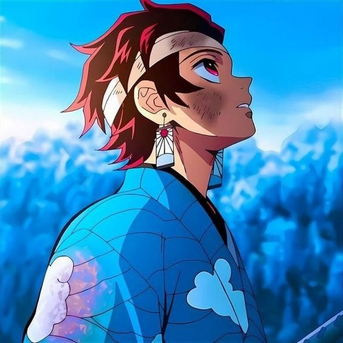
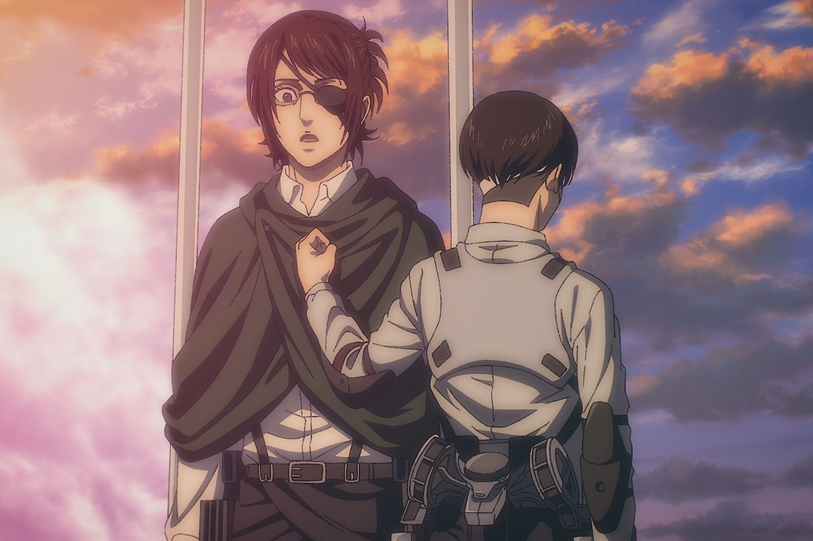
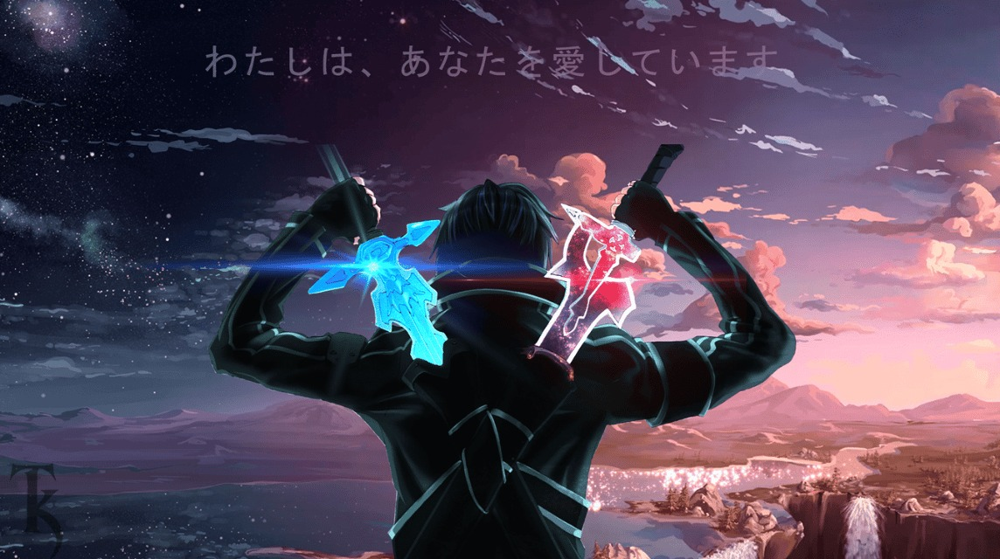

Demon Slayer

"Demon Slayer," also known as "Kimetsu no Yaiba" in Japanese, is a popular anime and manga series created by Koyoharu Gotouge. The story is set in Taisho-era Japan and follows a young boy named Tanjiro Kamado, who becomes a demon slayer after his family is slaughtered by demons, and his sister Nezuko is turned into a demon. Tanjiro's goal is to avenge his family and find a way to turn his sister back into a human. The series is known for its compelling characters, intricate sword-fighting techniques, and its exploration of themes like family, perseverance, and the struggle between good and evil. "Demon Slayer" gained widespread popularity due to its visually stunning animation and engaging plot. The anime adaptation was produced by Ufotable and became a massive hit in Japan and internationally. The first season of the anime covers the "Demon Slayer: Kimetsu no Yaiba" manga up to Chapter 53. A sequel film titled "Demon Slayer: Mugen Train" (or "Demon Slayer: Mugen Ressha") continues the story and adapts the "Infinity Train" arc. This film became one of the highest-grossing films in Japanese cinema history. In addition to the anime and manga, "Demon Slayer" has spawned video games, light novels, and other merchandise, making it a significant and influential franchise in the world of anime and manga. If you're a fan of action-packed anime with a rich story and memorable characters, "Demon Slayer" is definitely worth checking out.
Attack on Titan

"Attack on Titan," known as "Shingeki no Kyojin" in Japanese, is a popular anime and manga series created by Hajime Isayama. The story is set in a world where humanity is on the brink of extinction due to giant humanoid creatures known as Titans, which devour humans seemingly without reason. To protect themselves, the remnants of humanity live within enormous walled cities. The series primarily follows Eren Yeager, Mikasa Ackerman, and Armin Arlert, who join the military to fight the Titans after their hometown is destroyed by a colossal Titan. As the story unfolds, they discover hidden truths about the Titans, their walled society, and the mysteries surrounding their world. "Attack on Titan" is known for its intense action sequences, complex characters, and its exploration of themes like freedom, survival, and the consequences of warfare. The anime adaptation was produced by Wit Studio and later MAPPA and gained widespread popularity for its engaging storyline and memorable characters.
Sword Art Online
